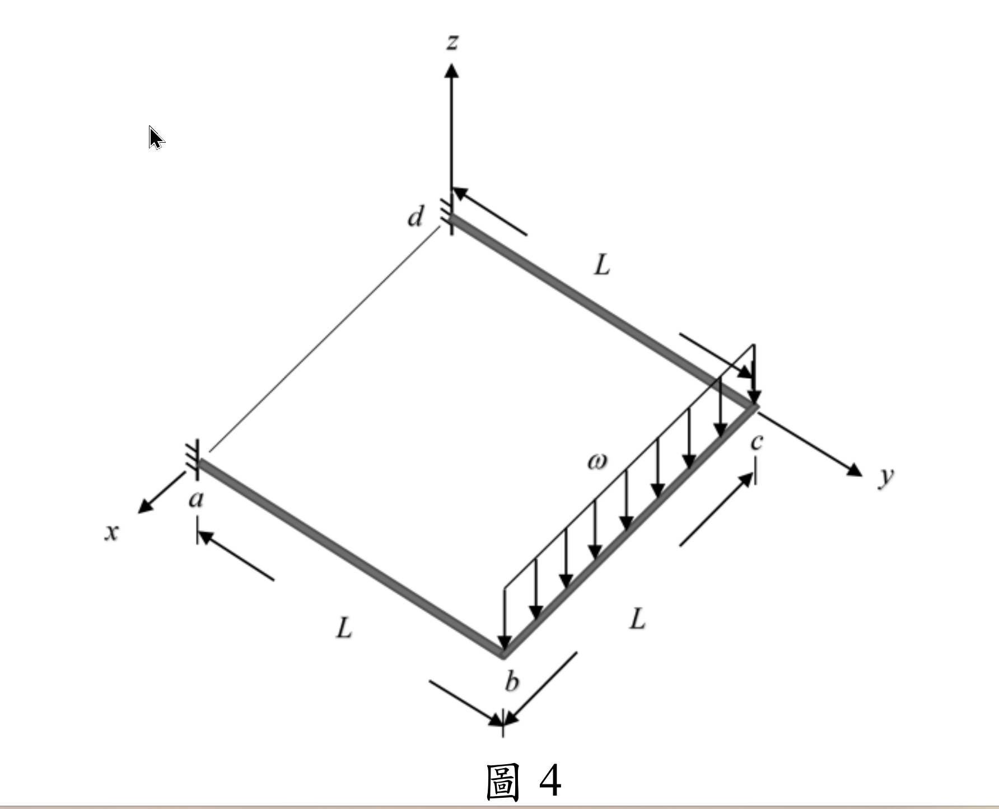
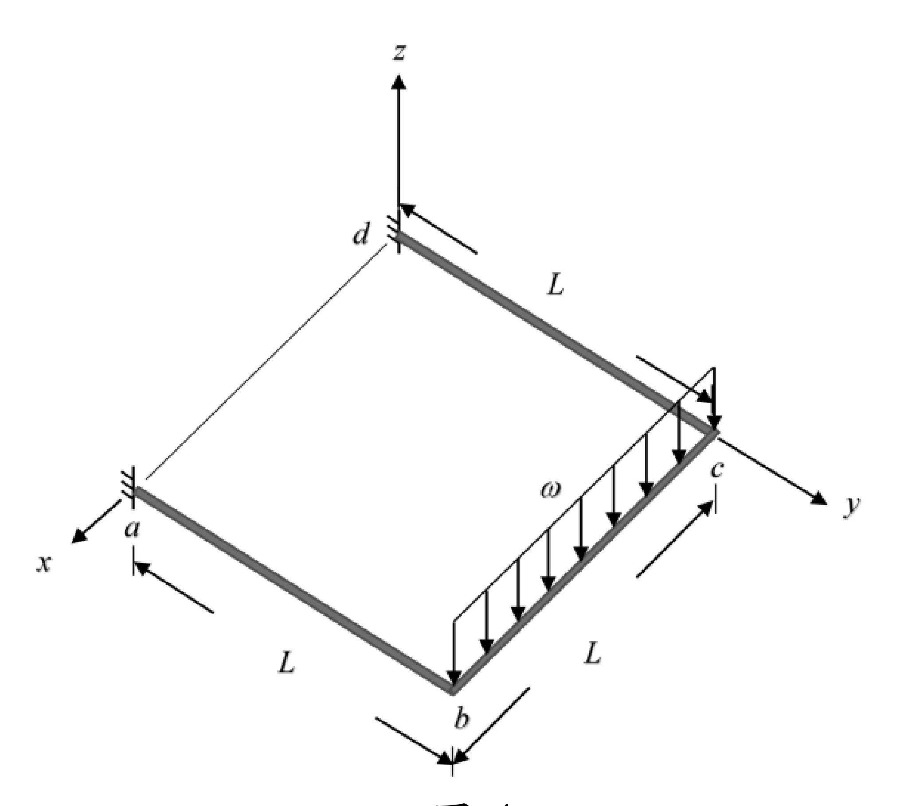
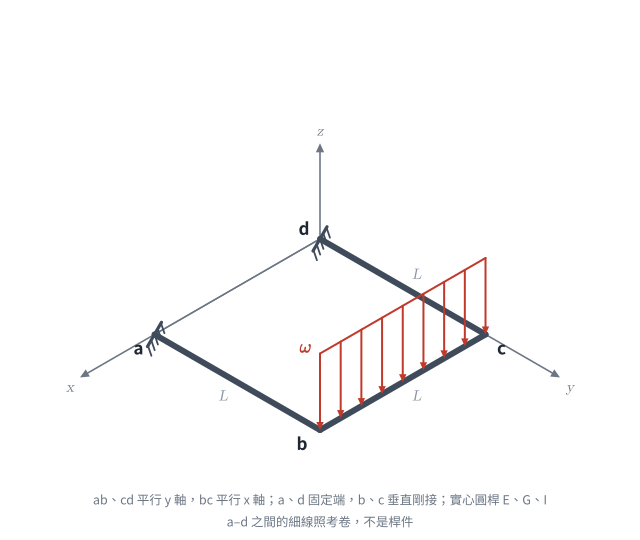
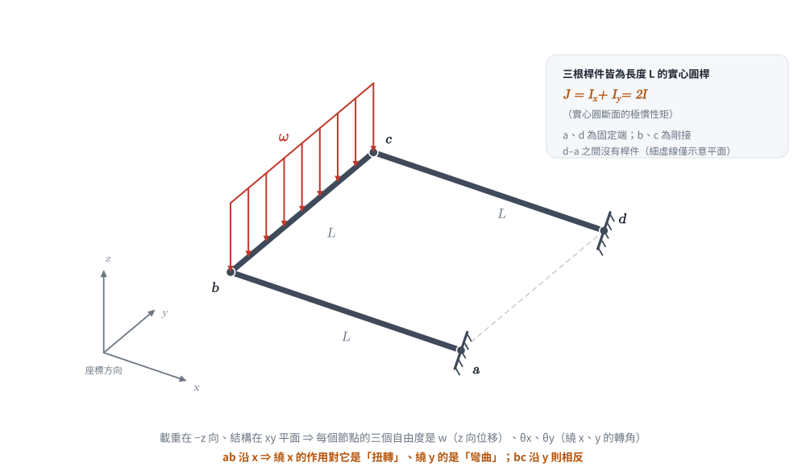
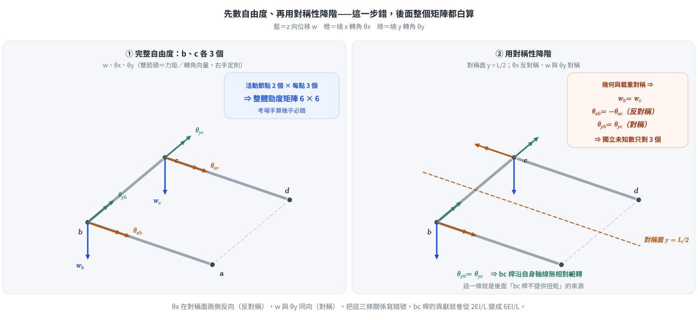
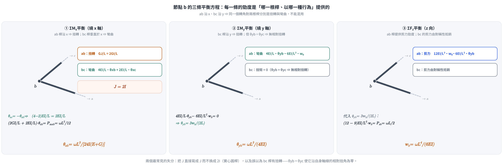
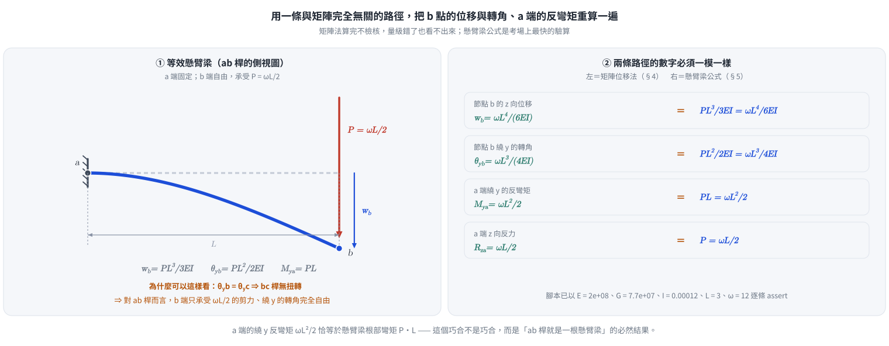

📄 題目正本（考卷原文、附圖與判讀清單；不含解法）
SA-2025-4 題目正本
本檔只記錄考卷上寫了什麼、圖上畫了什麼，不含任何解法。解析見同資料夾
SA-2025-4.md。
判讀清單經使用者確認前，狀態為「待確認」；確認後本檔原則上不再修改（改動須回考卷原圖並記 log）。
| 項目 | 內容 |
|---|---|
| 考卷 | raw/exams/SA-2025_結構學.pdf，第 2 頁，第四題（圖 4） |
| 考年 | 2025（民國 114 年）專技高考結構工程技師「結構學」 |
| 配分 | 25 分 |
| 附圖 | SA-2025-4-fig-1.png、SA-2025-4-fig-2.png |
| 判讀狀態 | 已確認（2026-11-05 使用者確認；影響答案項目定案：解析座標 x、y 與考卷對調，使用者決定數值不動、§1 加座標對照。原轉錄：2026-11-05 轉錄；PyMuPDF 110 dpi 整頁＋250–800 dpi 局部放大、PDF 向量座標；盲讀於開啟解析前完成） |
1. 考卷原文（逐字）
四、圖 4 所示 abcd 為一位於 xy 平面上的構架，a 及 d 為固定端，ab 及 bc 桿垂直剛接於 b 點，bc 及 cd 桿垂直剛接於 c 點。ab、bc 及 cd 三根桿件皆為長度 L 的實心圓桿，其彈性模數為 E，剪力模數為 G，慣性矩為 I。已知 bc 桿件受到負 z 軸方向的均布載重 ω。若不考慮桿件的軸向變形，請以勁度法求所有自由度之變位（含位移及轉角），及 a、d 兩支承之反力。（25 分）
2. 考卷給的公式、附表與參數
- 考卷沒有給任何參考公式或附表。
- E、G、I；實心圓桿（扭轉常數由斷面形狀推得，考卷沒有直接給 J）；不考慮軸向變形（題文）。
- 附圖為點陣圖（PDF 內嵌）。
- 卷首注意事項：可以使用電子計算器。不必抄題，作答時請將試題題號及答案依照順序寫在試卷上，於本試題上作答者，不予計分。本科目除專門名詞或數理公式外，應使用本國文字作答。
- 考試時間：2 小時。
3. 附圖

證據圖 SA-2025-4-fig-1.png

證據圖 SA-2025-4-fig-2.png（2026-11-05 自考卷重新擷取 500 dpi，無游標）
圖面文字照錄：z、d、L、c、ω、y、a、x、L、L、b、圖 4
4. 判讀清單
| # | 項目 | 判讀 | 圖上／題文依據 | 把握 |
|---|---|---|---|---|
| 1 | 座標（d 為原點） | d(0,0,0)、a(L,0,0)、b(L,L,0)、c(0,L,0) | 附圖 x、y 軸方向；三段尺寸 L | 確定 |
| 2 | 構件 | ab、bc、cd 三桿（a–d 細線不是桿件） | 題文「三根桿件」；附圖粗灰線三段、a–d 為細線 | 確定（解讀）；使用者確認 |
| 3 | 接點 b、c | 垂直剛接 | 題文 | 確定 |
| 4 | 支承 a、d | 固定端 | 題文；附圖短剖線 | 確定 |
| 5 | 斷面 | 實心圓桿；E、G、I | 題文 | 確定 |
| 6 | 載重 | ω 沿 −z 方向，bc 全長 | 題文；附圖箭頭由 b 排到 c | 確定 |
| 7 | 考卷沒有給 | 扭轉常數 J 的數值（題文只說實心圓桿） | — | 確定 |
| 8 | 所求 | 所有自由度的位移與轉角；a、d 反力；限勁度法 | 題文 | 確定 |
| 9 | 證據圖 | 舊截圖 fig-1：左上空白處有滑鼠游標（箭頭），下方多截到一條橫線；新增 fig-2（2026-11-05 自考卷重新擷取 500 dpi） | — | 確定 |
轉錄：2026-11-05（SA-U2-4 題目正本推廣・批 1）
確認：2026-11-05 使用者確認
考題編號：SA-2025-4
主分類： SA-U2-4 靜不定結構之矩陣分析法
副分類：
分析法： 矩陣法
標籤： 矩陣位移法 整體勁度矩陣 自由度 格床結構 實心圓桿 對稱性利用
1. 題目（考卷原文見題目正本）
考卷原文、公式／附表、附圖與判讀清單（已確認）見
SA-2025-4-problem.md。本節只列解題時最容易讀錯的地方與本解使用的記號；題意以題目正本為準。

重繪自考卷附圖，依判讀清單 #1–#9 重繪，採考卷座標。攔：桿件與座標軸對應讀反、a–d 細線讀成桿件。
常見誤讀
| 項目 | 正確判讀 | 常見誤讀 |
|---|---|---|
| 桿件方向 | ab、cd 平行 y 軸，bc 平行 x 軸（考卷座標） | ab 沿 x、bc 沿 y |
| a–d 細線 | 不是桿件 | 第四根桿 |
本解記號： 本解座標與考卷不同：§4 以 b 為原點、a = (L,0,0)、c = (0,L,0)，即本解 x ＝ 考卷 −y、本解 y ＝ 考卷 −x，w 向下為正。因此本解的 θx、Mx 對應考卷座標繞 y 軸的分量，θy、My 對應繞 x 軸的分量；數值不受影響（使用者 2026-11-05 決定不改寫 §3–§5，只加此對照）。
判讀圖解（解析自繪）

圖 1 題目重繪（向量版）。把「桿件方向 ↔ 座標軸」的對應釘死：$ab$ 沿 $x$，所以繞 $x$ 的作用對它是扭轉、繞 $y$ 的是彎曲；$bc$ 沿 $y$ 則完全相反。這一組對應弄反，$GJ/L$ 與 $4EI/L$ 就會擺錯位置，整個 $3 \times 3$ 都失效。
2. 考題核心精神與出題者意圖 (Core Concepts & Examiner's Intent)
本題測驗考生對於立體平面構架（Grid Frame / 格床結構）的矩陣位移法分析能力。
出題者的核心意圖包含：
- 實心圓桿的極慣性矩特性：考驗是否知道實心圓形斷面的極慣性矩 $J = I_x + I_y = 2I$，若直接寫 $J$ 而未轉換，將無法得到最終最簡答案。
- 對稱性的應用：完整的 Grid 結構有 2 個活動節點（$b, c$），每節點 3 個自由度（$w, \theta_x, \theta_y$），若直接組裝將形成 $6 \times 6$ 矩陣，在考場上手算極易出錯。利用結構幾何與載重的對稱性，可以將問題簡化至 $3 \times 3$ 甚至解耦，這是拿分的絕對關鍵。
3. 解題戰略地圖與陷阱分析 (Strategic Roadmap & Trap Analysis)
- Step 1: 定義坐標與自由度：設 $a$ 為 $(L,0,0)$、$b$ 為 $(0,0,0)$、$c$ 為 $(0,L,0)$、$d$ 為 $(L,L,0)$。由於載重 $\omega$ 均勻作用在 $bc$ 上，結構變形呈完全對稱。$w_b = w_c$、$\theta_{xb} = -\theta_{xc}$、$\theta_{yb} = \theta_{yc}$。
- Step 2: 建立節點等效載重：均布載重 $\omega$ 作用於 $bc$，產生固端剪力與固端彎矩。將其反向即為節點等效載重。
- Step 3: 組裝勁度矩陣並求解：針對節點 $b$ 建立平衡方程式。由於對稱性，$\theta_{yb} = \theta_{yc}$ 使得 $bc$ 桿無扭轉，而 $ab$ 桿提供彎曲與扭轉勁度。
- 陷阱 1：方向符號約定。彎矩與轉角的正負號必須依循嚴格的右手定則。
- 陷阱 2：$J = 2I$。忘記將 $J$ 換成 $2I$ 會導致扭轉剛度項無法與彎曲剛度項合併。
3.5 變數層次分析 (Variable Hierarchy Analysis)
複習提示：第一次解題後，在每個卡住的知識點旁標記
⚠；第二次複習時只看有⚠的項目。
最終目標
求出節點 b, c 的變位 (w, θx, θy)，並回代求 a, d 支承反力
本題關鍵公式（依計算順序）
$\boxed{\cdot}$ = 需由前步驟推導，非題目直接給定的變數
$$\text{Step 1: } P_{zb} = \frac{\omega L}{2}, \quad P_{mxb} = \frac{\omega L^2}{12}$$
$$\text{Step 2: } \Sigma F_{zb} = K_{11} w_b + K_{13} \theta_{yb} = \boxed{P_{zb}}$$
$$\text{Step 3: } \Sigma M_{yb} = K_{31} w_b + K_{33} \theta_{yb} = 0 \implies \theta_{yb} = f(\boxed{w_b})$$
$$\text{Step 4: } \Sigma M_{xb} = K_{22} \theta_{xb} = \boxed{P_{mxb}} \implies \theta_{xb}$$
L1：題目直接給定
看到題目就能讀出的數字，不需要任何公式。
| 符號 | 數值 | 說明 |
|---|---|---|
| $L$ | $L$ | 各桿長度 |
| $\omega$ | $\omega$ | 負 $z$ 向均布載重 |
| $E, G, I$ | $E, G, I$ | 材料及斷面性質 |
L2：需知識點推導
需要知道公式名稱與適用條件，套入 L1 即可算出。
Step 1：固端載重與等效節點載重
| 符號 | 公式/來源 | 卡關? |
|---|---|---|
| $P_{zb}$ | $bc$ 桿之一半總重：$\omega L / 2$ | |
| $P_{mxb}$ | $bc$ 桿均布載重之固端彎矩：$\omega L^2 / 12$ |
Step 2：局部勁度項
| 符號 | 公式/來源 | 卡關? |
|---|---|---|
| $K_{w,w}$ | 懸臂梁端點受力：$12EI/L^3$ | |
| $K_{\theta,\theta}$ | 懸臂梁端點彎曲：$4EI/L$ | |
| $K_{\text{torsion}}$ | 扭轉剛度：$GJ/L = 2GI/L$ |
L3：深層知識（不懂就卡住）
| 知識點 | 說明 | 卡關? |
|---|---|---|
| 實心圓桿極慣性矩 | $J = I_x + I_y = 2I$ | |
| 幾何對稱性分析 | U 型構架受對稱載重，兩側撓度相同 $w_b=w_c$，對稱軸彎矩反向 $\theta_{xb}=-\theta_{xc}$ | |
| 扭轉相容條件 | 因 $\theta_{yb} = \theta_{yc}$，$bc$ 桿沿自身軸線無相對扭轉變形 |
4. 步驟化詳細計算過程 (Step-by-Step Detailed Calculation)
Step 1: 坐標系統與對稱性
建立坐標系：設 $b$ 點為 $(0,0,0)$，$c$ 點為 $(0,L,0)$，$a$ 點為 $(L,0,0)$。
則 $ab$ 桿沿 $x$ 軸，$bc$ 桿沿 $y$ 軸。
由於結構與載重皆對稱於 $y = L/2$ 平面，可知節點位移具備以下對稱性：
- $z$ 向位移：$w_b = w_c$ (向下為正)
- 繞 $x$ 軸轉角：$\theta_{xb} = -\theta_{xc}$
- 繞 $y$ 軸轉角：$\theta_{yb} = \theta_{yc}$

圖 2 自由度辨識與對稱性降階。雙箭頭是力矩／轉角向量（右手定則），左圖 6 個自由度、右圖用對稱性降到 3 個。這張圖攔的是「$\theta_{xb} = -\theta_{xc}$ 寫成同號」——一寫錯，$bc$ 桿的貢獻就會從 $2EI/L$ 變成 $6EI/L$。
Step 2: 節點等效載重
作用於 $bc$ 桿的均布載重 $\omega$ (方向向下)，在節點 $b$ 產生的等效節點載重為：
- $P_{zb} = \frac{\omega L}{2}$ (方向向下)
- $P_{mxb} = \frac{\omega L^2}{12}$ (依右手定則，繞 $x$ 軸之轉矩)
Step 3: 節點 $b$ 之勁度平衡方程式
探討節點 $b$ 處的三個自由度 $w_b, \theta_{xb}, \theta_{yb}$：
-
對於繞 $x$ 軸的彎矩平衡 ($\Sigma M_{xb}$)：
$ab$ 桿提供扭轉勁度：$T_{ab} = \frac{GJ}{L} \theta_{xb} = \frac{2GI}{L} \theta_{xb}$
$bc$ 桿因 $\theta_{xb} = -\theta_{xc}$，提供彎曲勁度：$M_{xb}^{(bc)} = \frac{4EI}{L}\theta_{xb} + \frac{2EI}{L}(-\theta_{xb}) = \frac{2EI}{L}\theta_{xb}$
$\Sigma M_{xb} = \left( \frac{2GI}{L} + \frac{2EI}{L} \right) \theta_{xb} = P_{mxb} = \frac{\omega L^2}{12}$
解得：
$$ \boxed{ \theta_{xb} = \frac{\omega L^3}{24I(E+G)} } \quad (\text{且 } \theta_{xc} = -\frac{\omega L^3}{24I(E+G)}) $$ -
對於繞 $y$ 軸的彎矩平衡 ($\Sigma M_{yb}$)：
$ab$ 桿提供彎曲勁度：$M_{yb}^{(ab)} = \frac{4EI}{L} \theta_{yb} - \frac{6EI}{L^2} w_b$
$bc$ 桿因 $\theta_{yb} = \theta_{yc}$，無相對扭角，提供之扭矩為 $0$。
外部無 $y$ 向力矩載重：
$\frac{4EI}{L} \theta_{yb} - \frac{6EI}{L^2} w_b = 0 \implies \theta_{yb} = \frac{3}{2L} w_b$ -
對於 $z$ 向的力平衡 ($\Sigma F_{zb}$)：
$ab$ 桿提供剪力勁度：$V_{zb}^{(ab)} = \frac{12EI}{L^3} w_b - \frac{6EI}{L^2} \theta_{yb}$
$bc$ 桿之剪力貢獻因對稱性互相抵銷（外部載重已化為等效載重）。
$\frac{12EI}{L^3} w_b - \frac{6EI}{L^2} \left( \frac{3}{2L} w_b \right) = P_{zb} = \frac{\omega L}{2}$
$\left( \frac{12EI}{L^3} - \frac{9EI}{L^3} \right) w_b = \frac{\omega L}{2}$
$\frac{3EI}{L^3} w_b = \frac{\omega L}{2}$
解得：
$$ \boxed{ w_b = \frac{\omega L^4}{6EI} } \quad (\text{且 } w_c = \frac{\omega L^4}{6EI}) $$
將 $w_b$ 代回求 $\theta_{yb}$：
$$ \boxed{ \theta_{yb} = \frac{3}{2L} \left( \frac{\omega L^4}{6EI} \right) = \frac{\omega L^3}{4EI} } \quad (\text{且 } \theta_{yc} = \frac{\omega L^3}{4EI}) $$

圖 3 節點 $b$ 三條平衡方程的勁度來源，逐條標明「哪一根桿、以哪一種行為」提供。這張圖攔兩個最常見的失分：$J$ 沒換成 $2I$（實心圓桿 $J = I_x + I_y$），以及誤以為 $bc$ 桿有扭轉——$\theta_{yb} = \theta_{yc}$ 使它沿自身軸線的相對扭角為零。
Step 4: 計算支承反力
求 $a$ 點之支承反力（固定端，對應 $ab$ 桿端點力）：
-
垂直反力 $R_{za}$：
$R_{za} = V_{ab} = \frac{\omega L}{2}$ (向上) -
繞 $x$ 軸反彎矩 $M_{xa}$（扭矩）：
$M_{xa} = \frac{GJ}{L}\theta_{xb} = \frac{2GI}{L} \frac{\omega L^3}{24I(E+G)} = \frac{\omega L^2 G}{12(E+G)}$ -
繞 $y$ 軸反彎矩 $M_{ya}$（彎矩）：
固端彎矩為 $M_{ya} = \frac{6EI}{L^2} w_b - \frac{2EI}{L} \theta_{yb} = \frac{6EI}{L^2} (\frac{\omega L^4}{6EI}) - \frac{2EI}{L} (\frac{\omega L^3}{4EI}) = \omega L^2 - \frac{\omega L^2}{2} = \frac{\omega L^2}{2}$
由對稱性，$d$ 點支承反力量值與 $a$ 點相同（方向依坐標系對稱對應）。
5. 關鍵爭議點與進階探討 (Critical Issues & Advanced Discussion)
- 若考場上未察覺 $w$ 與 $\theta_y$ 可解耦，可直接寫出完整的 $3 \times 3$ 勁度矩陣，聯立求解亦會得到完全相同的結果。
- $bc$ 桿無扭轉變形的結論非常優雅，這意味著就彎曲而言，$ab$ 桿形同自由端承受集中載重 $\omega L / 2$ 之懸臂梁，其位移 $PL^3/3EI$ 與旋轉 $PL^2/2EI$ 完全吻合。考場上若能以靜力概念快速驗算，便能保證答案無誤。

圖 4 用一條與矩陣完全無關的路徑重算 $w_b$、$\theta_{yb}$、$M_{ya}$、$R_{za}$ 四項。這張圖攔的是「量級錯而不自知」：矩陣法算完若不驗算，$L$ 的次方或係數錯了在紙面上看不出來；$M_{ya} = \omega L^2/2$ 恰等於懸臂梁根部彎矩 $P \cdot L$，不是巧合而是必然。
圖解補繪：2026-08-16（向量圖，腳本 gen_SA-2025-4.py，可重跑；四張圖的符號式取自 §4，並在腳本中以一組具體數值逐條 assert）
修正日期：2026-11-05（§1 改為指向題目正本並放重繪附圖（figs/SA-2025-4-fig-1-problem.svg）、加常見誤讀；原 §1 解析自繪圖移至「判讀圖解（解析自繪）」；本解記號加註本解座標與考卷座標的對照（數值不動）；圖由 gen_SA-2025-4_problem.py 產生，可重跑）